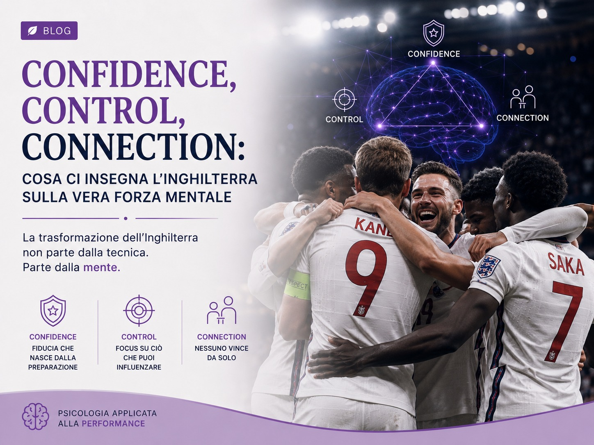
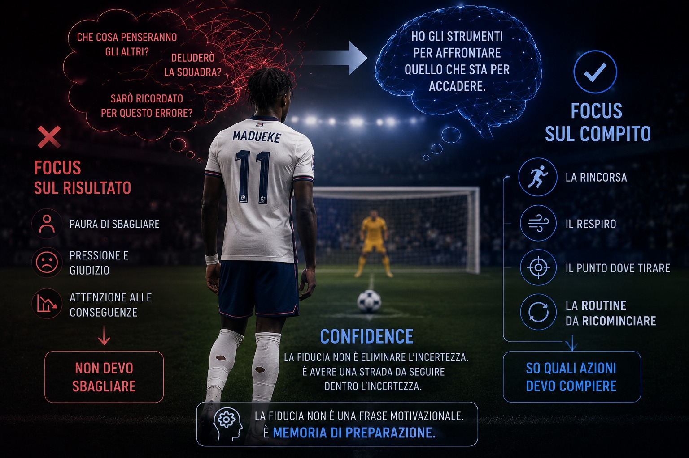
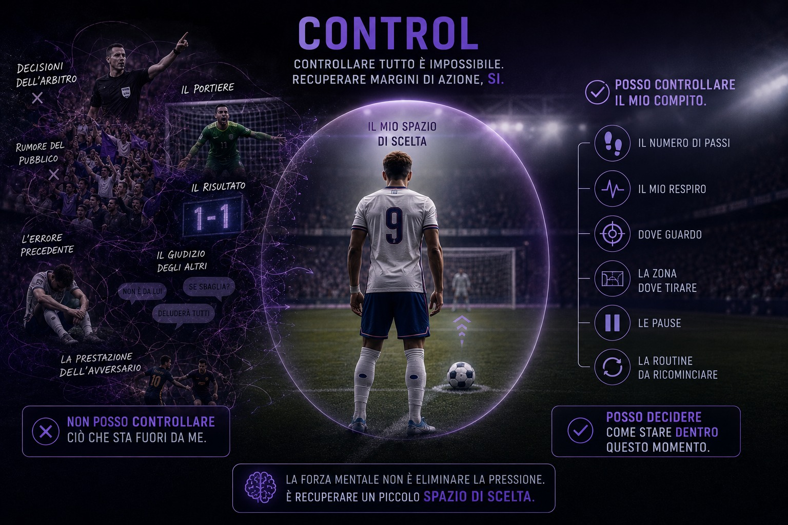
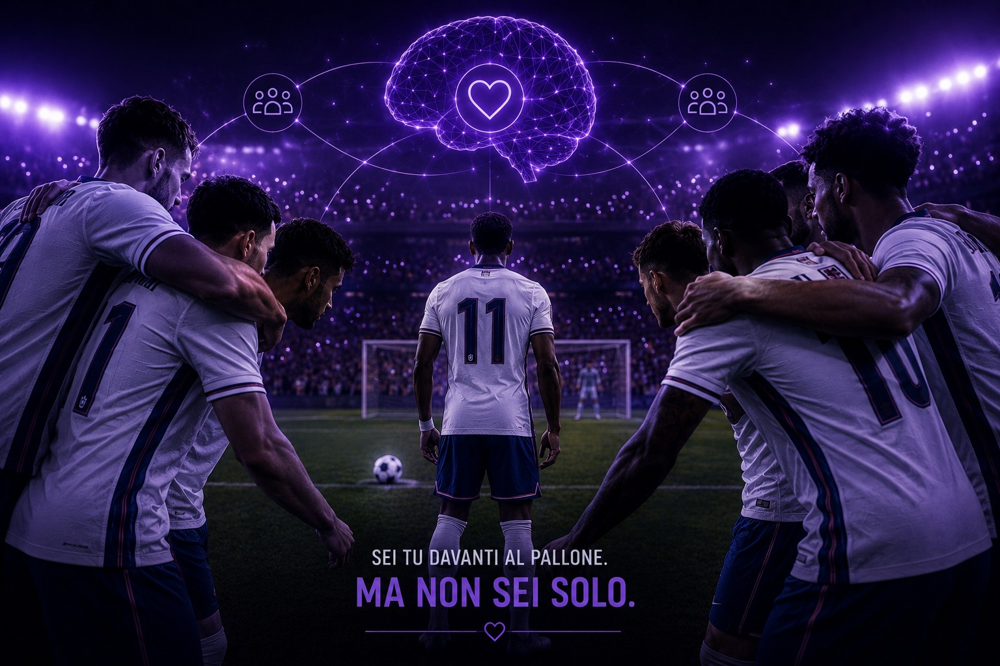

Confidence, Control, Connection: cosa ci insegna l'Inghilterra sulla vera forza mentale
Come una nazionale abituata a perdere ai rigori ha riscritto la propria storia lavorando su fiducia, controllo e connessione. E cosa possiamo imparare tutti, dentro e fuori dal campo.
Ilaria Dammicco
Pubblicato l'11 Luglio 2026 · 12 min di lettura
Per molti anni, quando una partita dell'Inghilterra arrivava ai rigori, sembrava che il finale fosse già scritto.
Non importava quanto fosse forte la squadra, quanti campioni avesse in campo o quanto bene avesse giocato fino a quel momento.
Quando la pressione aumentava, tornava la stessa sensazione: paura, tensione e inevitabilità del fallimento.
Tra il 1990 e il 2012, l'Inghilterra perse sei delle sette serie di rigori disputate nelle principali competizioni internazionali. Ogni nuova eliminazione sembrava confermare una narrazione ormai radicata nell'immaginario collettivo: gli inglesi non sanno reggere la pressione.
Poi qualcosa è cambiato.
Con l'arrivo di Gareth Southgate sulla panchina della Nazionale nel 2016, l'Inghilterra ha iniziato a considerare la componente mentale non come un elemento secondario, da affrontare soltanto quando emergeva un problema, ma come una parte integrante della preparazione.
Il risultato non è stato soltanto un miglioramento nei rigori. È cambiato il modo in cui la squadra ha imparato a vivere la pressione, l'errore, la paura del fallimento e le relazioni all'interno del gruppo.
Il cuore della trasformazione
Un recente approfondimento del Times ha riassunto questa trasformazione attraverso tre parole:
Confidence, Control e Connection.
Fiducia, controllo e connessione.
Tre elementi che possono aiutarci a comprendere perché alcune persone e alcuni gruppi riescano a rimanere efficaci nei momenti decisivi, mentre altri, pur possedendo ottime competenze, finiscano per essere travolti dalla pressione.

Il problema non erano soltanto i rigori
Per molto tempo i rigori sono stati descritti come una lotteria. Un evento governato dalla fortuna, impossibile da riprodurre davvero durante un allenamento e, quindi, difficilmente controllabile.
Ma definire una situazione come una lotteria produce una conseguenza psicologica precisa: toglie responsabilità, ma toglie anche potere. Se il risultato dipende quasi esclusivamente dalla fortuna, il giocatore può fare ben poco per prepararsi.
Il lavoro avviato dalla Football Association e sostenuto da Southgate ha ribaltato questa convinzione.
L'analisi di Chris Markham
L'analista studiò per circa diciotto mesi numerosi aspetti della prestazione dal dischetto: la rincorsa, il ritmo, la respirazione, la direzione del tiro, le preferenze degli avversari, il comportamento del portiere e persino le reazioni dei compagni dopo un gol o un errore.
Il rigore non veniva più interpretato come un momento misterioso da affrontare affidandosi all'istinto. Diventava una prestazione da conoscere, preparare e allenare.
Secondo Markham, parlare continuamente di “lotteria” aveva sottratto ai calciatori la sensazione di possedere un margine di controllo. Il nuovo approccio cercava, invece, di restituirglielo.
La vittoria contro la Colombia ai Mondiali del 2018 interruppe una serie di cinque sconfitte consecutive ai rigori nelle grandi competizioni. Da quel momento, sotto la guida di Southgate, l'Inghilterra avrebbe vinto tre delle quattro serie disputate.
Ma sarebbe riduttivo leggere questa trasformazione soltanto attraverso i risultati.
La domanda più interessante è un'altra: che cosa è cambiato nella mente dei giocatori?

Confidence: la fiducia non è pensare che andrà sicuramente bene
La prima C è quella della Confidence, la fiducia.
Spesso la fiducia viene confusa con l'ottimismo. Essere fiduciosi, però, non significa ripetersi che si vincerà, convincersi che non si proverà ansia o immaginare esclusivamente il risultato finale.
La fiducia realmente utile alla performance nasce da una percezione diversa:
"Ho gli strumenti per affrontare quello che sta per accadere."
È la differenza tra pensare “Non devo sbagliare” e pensare “So quali azioni devo compiere.”
Il meccanismo psicologico
Quando la persona concentra la propria attenzione sul risultato, soprattutto se molto importante, la mente può iniziare ad anticipare tutte le conseguenze di un possibile fallimento.
"Che cosa penseranno gli altri?"
"Deluderò la squadra?"
"Sarò ricordato per questo errore?"
La pressione aumenta perché il gesto non viene più percepito soltanto per quello che è. Diventa una prova del proprio valore.
La preparazione permette invece di riportare l'attenzione sul compito. La rincorsa. Il respiro. Il punto verso cui dirigere il pallone. La routine da ricominciare nel caso in cui venga interrotta.
La fiducia non elimina l'incertezza, ma offre alla mente una strada da seguire al suo interno.
È ciò che vediamo nelle routine dei grandi rigoristi. Prima del tiro, il giocatore non può sapere con certezza se segnerà. Può però sapere come posizionare il pallone, quanto aspettare dopo il fischio, dove orientare lo sguardo e quale gesto tecnico eseguire.
La fiducia, quindi, non è una frase motivazionale. È memoria di preparazione. È la sensazione di avere già affrontato, studiato e ripetuto una parte di ciò che sta per accadere.
Noni Madueke, Mondiale 2026
Parlando della preparazione ai rigori, il giocatore inglese ha sottolineato quanto la componente psicologica sia inseparabile da quella tecnica e quanto sia necessario possedere una convinzione molto forte nelle proprie capacità per riuscire a esprimersi sul palcoscenico più importante.

Control: controllare tutto è impossibile, recuperare margini di azione no
La seconda C è quella del Control, il controllo.
Sotto pressione, il bisogno di controllare ciò che accade aumenta.
Il paradosso è che proprio nei momenti più importanti diventano evidenti tutti gli elementi che non dipendono da noi:
- la decisione dell'arbitro;
- il comportamento del portiere;
- il rumore del pubblico;
- il risultato;
- l'errore precedente;
- il giudizio delle persone;
- la prestazione dell'avversario.
Provare a controllare questi fattori consuma risorse attentive ed emotive senza produrre un vantaggio reale.
Il controllo psicologico non consiste quindi nel dominare ogni elemento della situazione. Consiste nel distinguere ciò che possiamo influenzare da ciò che dobbiamo accettare.
Controllabile: la propria respirazione, lo sguardo, la routine, la rincorsa, il gesto tecnico
Non controllabile: il portiere, il pubblico, l'esito, il giudizio altrui, la storia
Un rigorista non controlla il movimento del portiere, ma può controllare la propria respirazione. Non controlla il peso storico della maglia che indossa, ma può riportare lo sguardo sul pallone. Non controlla i pensieri che attraversano la mente, ma può scegliere di non seguirli e di tornare alla propria routine.
Gli strumenti del controllo
Il lavoro sui rigori svolto dall'Inghilterra comprendeva anche questi dettagli: il numero di passi, il ritmo della rincorsa, le zone verso cui tirare, le pause, il comportamento del gruppo e la gestione delle possibili interferenze.
Il professor Geir Jordet, che ha studiato centinaia di rigori, evidenzia l'utilità di strumenti come visualizzazione, self-talk e routine pre-tiro. Suggerisce inoltre che, quando il portiere o le circostanze interrompono la preparazione, il giocatore possa fermarsi, respirare e ricominciare la propria sequenza, anziché sentirsi costretto ad accelerare.
È un comportamento apparentemente semplice, ma psicologicamente potente.
Significa affermare: “Non posso eliminare la pressione, ma posso decidere come stare dentro questo momento.”
La forza mentale non è la capacità di non sentire il caos. È la capacità di recuperare un piccolo spazio di scelta anche quando il caos è presente.

Connection: sotto pressione non reagiamo mai davvero da soli
La terza C è la Connection, la connessione.
È probabilmente l'aspetto meno visibile, ma uno dei più importanti.
Prima dell'era Southgate, la Nazionale inglese veniva spesso descritta come un insieme di grandi giocatori che faticavano a diventare un gruppo realmente unito. Molti calciatori arrivavano da club rivali, portandosi dietro appartenenze, tensioni e distanze costruite durante il campionato.
Southgate e la psicologa Pippa Grange hanno lavorato per modificare questa cultura.
Il lavoro di Pippa Grange
Grange, nominata responsabile dell'area dedicata alle persone e allo sviluppo del team all'interno della Football Association, ha contribuito a rendere più normale parlare di paura, vulnerabilità, pressione e fallimento.
Il suo lavoro non mirava semplicemente a rendere i giocatori “più duri”. Mirava a creare un ambiente nel quale non fosse necessario nascondere continuamente le proprie paure per essere considerati forti.
Durante il Mondiale del 2018, la squadra apparve più leggera, unita e libera dal peso della propria storia. Analisti e professionisti che avevano lavorato con Southgate sottolinearono il ruolo della fiducia, dell'ascolto, dell'empatia e del senso di appartenenza costruito all'interno del gruppo.
Come la connessione cambia il cervello
La connessione modifica il modo in cui il cervello interpreta la pressione.
Senza connessione
Il rischio viene vissuto come più grande. Ogni errore mette in discussione l'appartenenza.
Con connessione
La minaccia si ridimensiona. L'errore non fa meno male, ma non esclude dal gruppo.
Un esempio significativo si osserva proprio durante le serie di rigori. Dopo ogni tiro segnato, i giocatori inglesi non si limitavano a festeggiare il risultato individuale. Tornavano verso il gruppo mostrando energia, vicinanza e sostegno per il compagno successivo.
La performance individuale viene sostenuta da un messaggio collettivo: “Sei tu davanti al pallone, ma non sei solo.”
La paura non va eliminata
Una delle idee centrali associate al lavoro di Pippa Grange riguarda il rapporto con la paura.
Il problema non è provare paura. La paura segnala che qualcosa conta.
Il problema nasce quando la persona interpreta quella sensazione come la prova di non essere pronta, di essere debole o di stare per fallire.
Il circolo vizioso dell'ansia da prestazione
"Perché sono ancora agitato?"
"Se sento questa tensione significa che non sono preparato?"
"Gli altri sembrano più tranquilli di me."
Cercare di eliminare completamente l'ansia può trasformarsi in un ulteriore motivo di preoccupazione.
Un approccio più utile consiste nel riconoscere l'attivazione e attribuirle un significato funzionale. Non “Sto perdendo il controllo” ma “Il mio organismo si sta preparando ad affrontare qualcosa di importante.”
Nel racconto della trasformazione inglese ricorre proprio il passaggio da una mentalità dominata dalla paura a una mentalità orientata alla possibilità. La partita decisiva non viene più interpretata soltanto come un'occasione in cui si può fallire. Diventa anche un'occasione in cui si può agire, esprimersi e costruire qualcosa.
Grange ha spiegato in diverse occasioni che il fallimento non deve essere considerato l'opposto del successo, ma una componente inevitabile del processo di crescita. Le relazioni e la connessione rappresentano inoltre uno degli antidoti più importanti alla paura.
Il caso di Ivan Toney: regolare le emozioni non significa non provarle
La gestione mentale non riguarda soltanto i rigori.
Durante gli Europei del 2024, Ivan Toney entrò in campo al 94º minuto della partita contro la Slovacchia. Era arrabbiato. Essere inserito così tardi, quando la squadra era vicinissima all'eliminazione, gli aveva provocato una forte frustrazione.
Toney non negò quell'emozione. Non raccontò di essere rimasto perfettamente calmo. Spiegò, invece, di aver dovuto uscire rapidamente da quello stato mentale per concentrarsi sui minuti ancora disponibili.
Il ruolo dello psicologo dello sport
Il lavoro svolto con lo psicologo dello sport Michael Caulfield lo aveva aiutato a comprendere che provare rabbia e lasciarsi guidare dalla rabbia sono due cose differenti.
Poco dopo, Toney contribuì all'azione che portò al pareggio di Jude Bellingham e fornì a Harry Kane l'assist per il gol decisivo.
Questo episodio descrive bene che cosa significhi regolazione emotiva. Non diventare insensibili. Non fingere che tutto vada bene. Ma riconoscere quello che sta accadendo dentro di noi e scegliere quale comportamento mettere in atto.
Le tre C fuori dal campo
Confidence, Control e Connection non riguardano soltanto il calcio. Le ritroviamo ogni volta che una persona deve esprimere le proprie competenze sotto pressione.
Confidence
Nel lavoro
Non consiste nel convincersi di non commettere errori. Nasce dalla chiarezza delle competenze, dalla preparazione e dalla possibilità di affrontare gradualmente situazioni complesse.
Senza preparazione, la richiesta di “essere più sicuri” rischia di diventare soltanto un'altra pressione.
Control
Nel lavoro
Un team non controlla il mercato, gli imprevisti o le decisioni dei clienti. Può però controllare priorità, responsabilità, comunicazione e reazione agli errori.
“Controllare il controllabile” è un metodo per proteggere attenzione ed energia mentale.
Connection
Nel lavoro
La percezione di poter parlare, chiedere aiuto e riconoscere un errore senza essere svalutati. Un gruppo che si fida non è senza conflitti: è un gruppo in cui il conflitto non diventa una minaccia personale.
Quando questa connessione manca, le persone tendono a nascondere gli errori, evitare il confronto e proteggere la propria immagine. Quando è presente, le energie vengono utilizzate per risolvere il problema, non per difendersi dagli altri.
La forza mentale si costruisce prima del momento decisivo
Quando osserviamo un atleta segnare un rigore decisivo, vediamo soltanto pochi secondi.
Il pallone viene posizionato. L'arbitro fischia. Il giocatore parte.
Ma dentro quel gesto esistono mesi o anni di lavoro.
Cosa c'è dentro un rigore
Ripetizioni tecniche
Informazioni raccolte
La routine
Gestione del respiro
Rapporto con l'errore
Fiducia nei compagni
Ci sono le ripetizioni tecniche. Le informazioni raccolte. La routine. La gestione del respiro. Il rapporto con l'errore. La fiducia costruita con i compagni. La percezione di essere sostenuti anche nel caso in cui il pallone non entri.
Per questo la forza mentale non nasce improvvisamente quando la pressione raggiunge il livello massimo. In quel momento emerge ciò che è stato costruito prima.
L'Inghilterra non ha cancellato la propria storia negativa semplicemente decidendo di non averne più paura. Ha iniziato a studiarla, parlarne e trasformarla in comportamenti allenabili.
Ha sostituito l'idea della lotteria con quella della preparazione. Ha cercato di spostare l'attenzione dal giudizio al compito, dalla paura individuale alla responsabilità condivisa, dall'obbligo di essere invulnerabili alla possibilità di affrontare insieme anche il fallimento.
Ed è forse questa la lezione più importante.
La vera forza mentale non è non avere paura.
È avere abbastanza fiducia per agire nonostante l'incertezza.
Abbastanza controllo per tornare a ciò che dipende da noi.
E abbastanza connessione per ricordarci che, anche nel momento in cui siamo chiamati a compiere il gesto decisivo, non dobbiamo affrontarlo completamente da soli.
Fonti e approfondimenti
L'articolo prende spunto dall'approfondimento del Times dedicato alle tre dimensioni della forza mentale dell'Inghilterra e dal lavoro svolto durante l'era Southgate.
Sono stati inoltre consultati gli approfondimenti di Reuters sulla preparazione inglese ai rigori, le dichiarazioni di Chris Markham, le analisi del professor Geir Jordet e le testimonianze di Ivan Toney e Noni Madueke.
Per il lavoro di Pippa Grange sono stati utilizzati contributi e interviste dedicati al suo approccio alla paura, alla cultura di squadra e alla connessione.
Iscriviti alla newsletter
per non perdere i prossimi contenuti.
Ci vediamo sabato prossimo 🦋
La teoria è utile.
La pratica cambia tutto.
Ogni articolo nasce dall'esperienza sul campo. Se un tema ti riguarda, il passo successivo è trasformarlo in un percorso concreto.